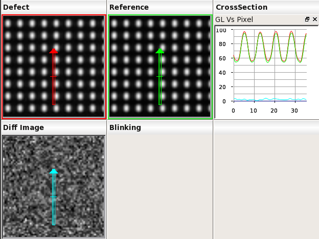
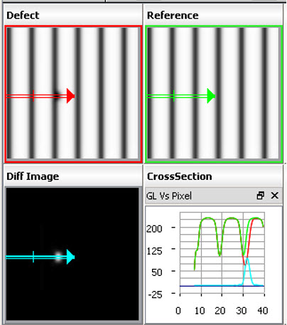

When
cross section analysis is performed, a cross section bar is drawn
to indicate the analysis region. The cross section bar appears as
an arrow within a bounding box (click the Display Cross Section
Bar icon in the Image Measurement button bar if it is not displayed).
Figure 1. Example
Cross Section Bar
The gray level (GL) value for the pixels of the cross section
area outside an image is never shown.
Figure 2 illustrates a cross section plot where
the starting point of the cross section bar (the arrow object) is
outside the image.
Figure 2. Example Cross Section Plot